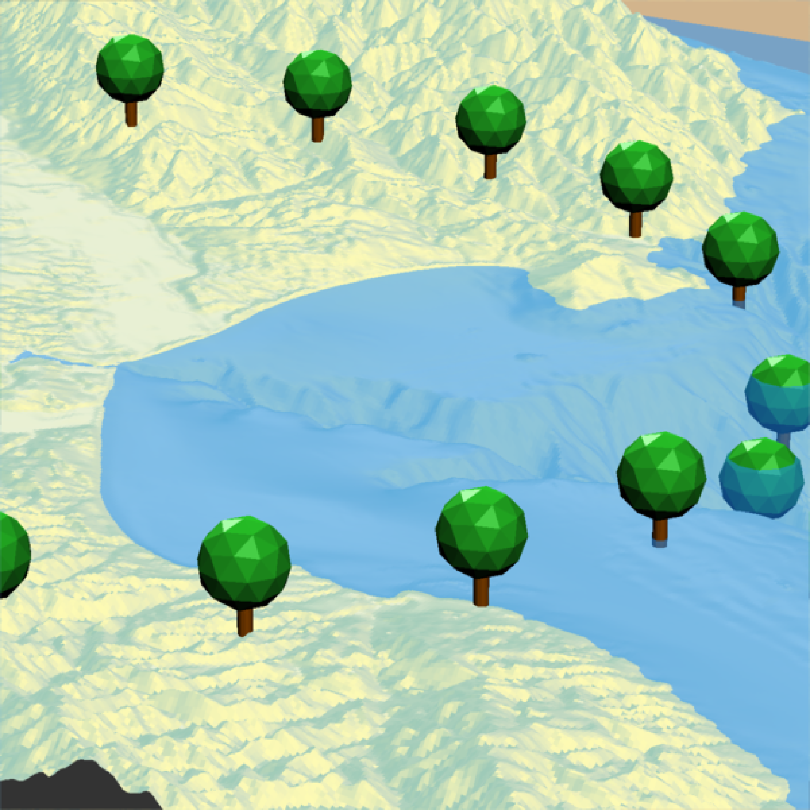
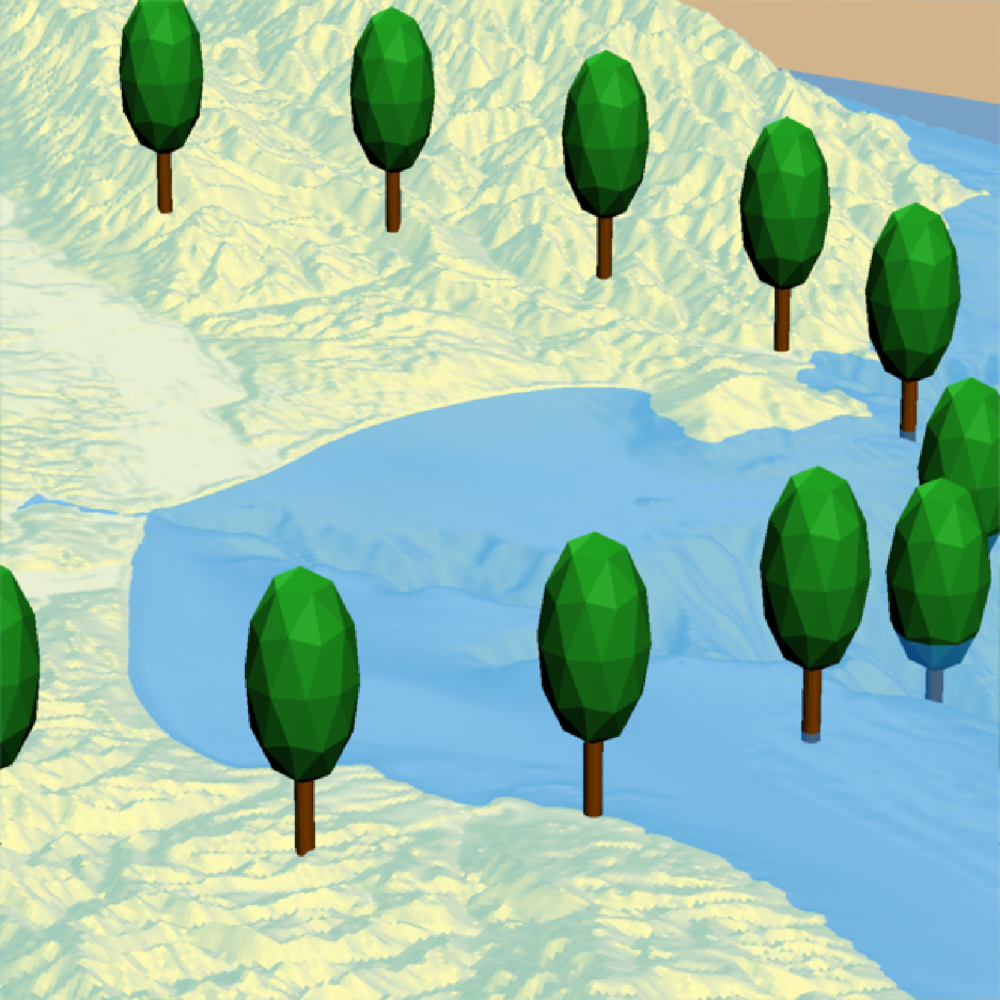
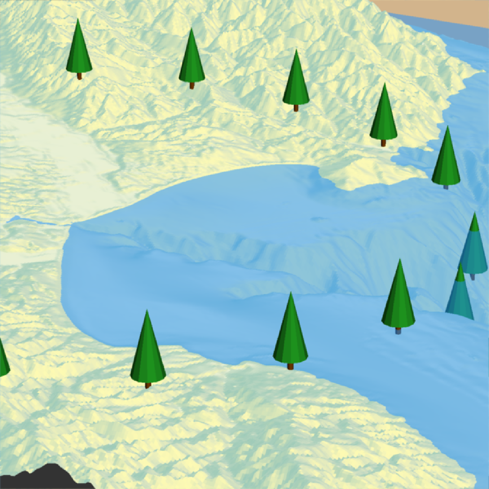
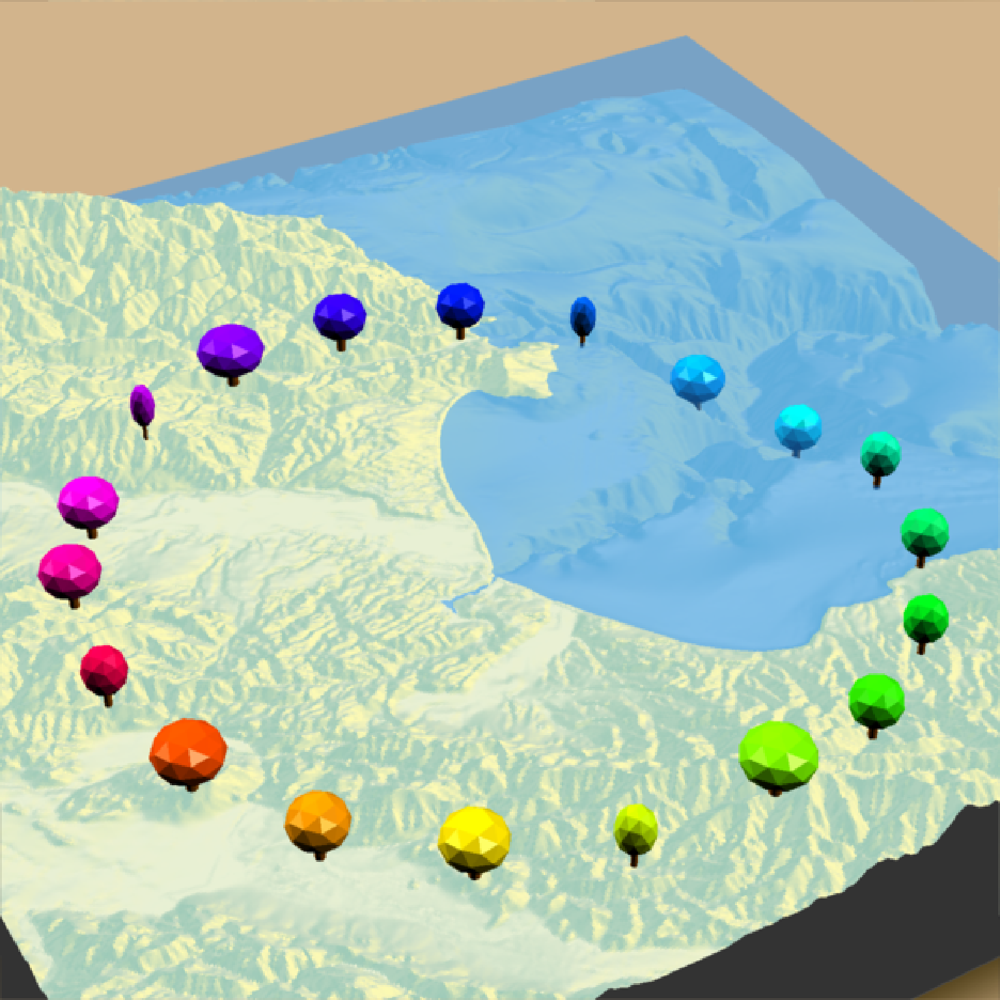
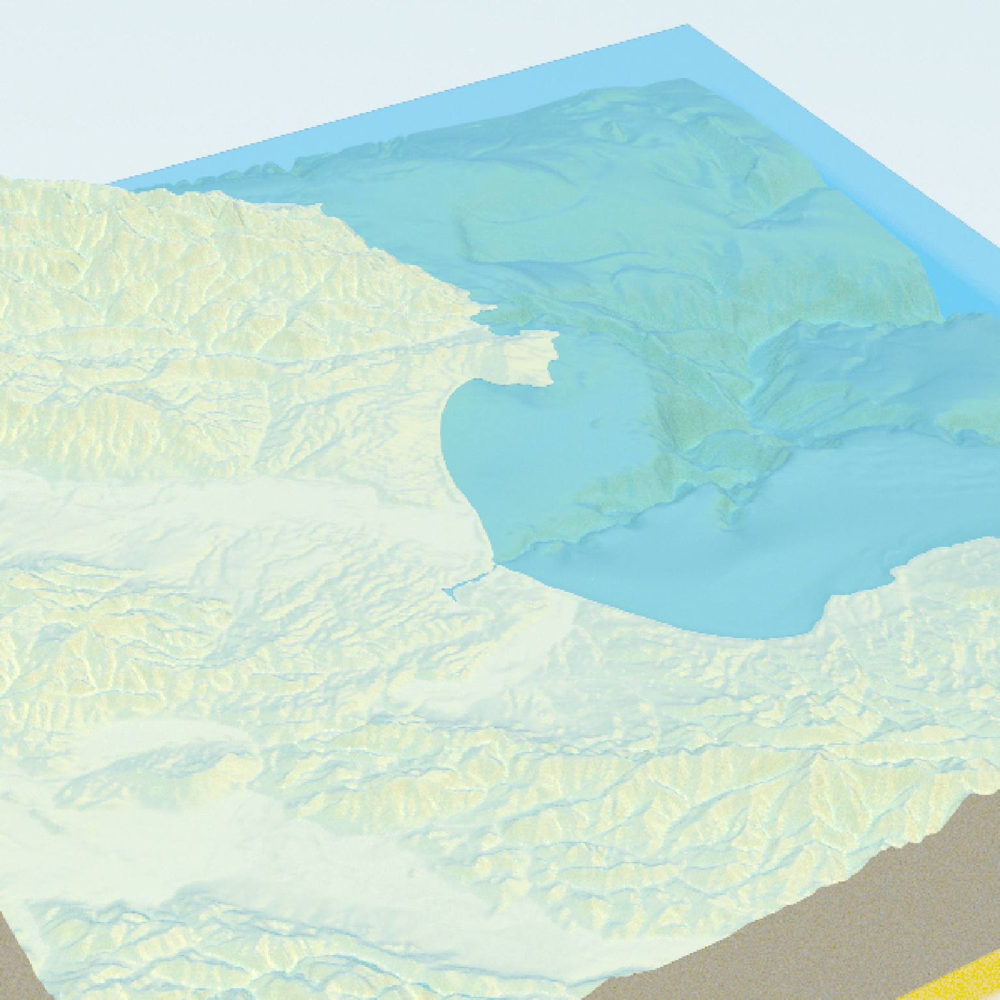

Adds 3D tree to the current scene, using latitude/longitude or coordinates in the reference system defined by the extent object.
render_tree(
lat = NULL,
long = NULL,
extent = NULL,
type = "basic",
canopy_color = "#22aa22",
trunk_color = "#964B00",
absolute_height = FALSE,
canopy_height = 9,
canopy_width_ratio = NULL,
trunk_height = NULL,
trunk_radius = NULL,
tree_zscale = TRUE,
min_height = NULL,
zscale = 1,
heightmap = NULL,
baseshape = "rectangle",
angle = c(0, 0, 0),
clear_previous = FALSE,
...
)Arguments
- lat
Vector of latitudes (or other coordinate in the same coordinate reference system as extent).
- long
Vector of longitudes (or other coordinate in the same coordinate reference system as extent).
- extent
A `raster::Extent` object with the bounding box of the displayed 3D scene.
- type
Default `"basic"`. Type of tree. Other built-in option: `"cone"`.
- canopy_color
Default `"darkgreen"`. Color(s) of the canopy.
- trunk_color
Default `"#964B00"` (brown). Color(s) of the trunk,
- absolute_height
Default `FALSE`. Default is specifying the tree height directly, relative to the underlying height map. If `TRUE`, `canopy_height` will specified by the actual altitude of the top of the tree. Total tree height will be `canopy_height + trunk_height`.
- canopy_height
Default `9`. Height of the canopy, in units of height map. Total tree height will be `canopy_height + trunk_height`.
- canopy_width_ratio
Default `1`. Ratio of the canopy width to the canopy height. `1` is spherical.
- trunk_height
Default `NULL`, automatically computed. Height of the trunk, from the ground. Default is 1/3rd the canopy height if `type = "basic"`, and 1/6th the canopy height if `type = "cone"`. Total tree height will be `canopy_height + trunk_height`.
- trunk_radius
Default `NULL`, automatically computed. Default is 1/5rd the trunk height if `type = "basic"`, and 1/10th the trunk height if `type = "cone"`.
- tree_zscale
Default `TRUE`. Whether to scale the size of the tree by zscale to have it match the size of the map. If zscale is very big, this will make the trees very small.
- min_height
Default `NULL`. Minimum height of a tree. Set to a positive number to filter out trees below that height.
- zscale
Default `1`. The ratio between the x and y spacing (which are assumed to be equal) and the z axis in the original heightmap.
- heightmap
Default `NULL`. Automatically extracted from the rgl window--only use if auto-extraction of matrix extent isn't working. A two-dimensional matrix, where each entry in the matrix is the elevation at that point. All points are assumed to be evenly spaced.
- baseshape
Default `rectangle`. Shape of the base. Options are `c("rectangle","circle","hex")`.
- angle
Default `c(0,0,0)`. Angle of rotation around the x, y, and z axes. If this is a matrix or list, each row (or list entry) specifies the rotation of the nth tree specified (number of rows/length of list must equal the length of `lat`/`long`).
- clear_previous
Default `FALSE`. If `TRUE`, it will clear all existing trees.
- ...
Additional arguments to pass to `rgl::rgl.triangles()`.
Examples
# \donttest{
#Let's first start by drawing some trees in a circle around Monterey Bay
#We won't scale these to a realistic size (yet)
moss_landing_coord = c(36.806807, -121.793332)
montereybay %>%
sphere_shade() %>%
plot_3d(montereybay,zscale=50,water=TRUE,
shadowcolor="#40310a", background = "tan",
theta=210, phi=22, zoom=0.20, fov=55)
t = seq(0,2*pi,length.out=20)
circle_coords_lat = moss_landing_coord[1] + 0.3 * sin(t)
circle_coords_long = moss_landing_coord[2] + 0.3 * cos(t)
render_tree(extent = attr(montereybay,"extent"), heightmap = montereybay,
tree_zscale = FALSE, canopy_height = 30, canopy_width_ratio = 0.5,
lat = unlist(circle_coords_lat), long = unlist(circle_coords_long), zscale=50)
render_snapshot()

#Change the canopy width ratio (compared to the height)
render_tree(extent = attr(montereybay,"extent"), heightmap = montereybay,
tree_zscale = FALSE, canopy_height = 30, canopy_width_ratio = 0.5,
clear_previous = TRUE,
lat = unlist(circle_coords_lat), long = unlist(circle_coords_long), zscale=50)
render_snapshot()

#Change the trunk height and width
render_tree(extent = attr(montereybay,"extent"), heightmap = montereybay,
tree_zscale = FALSE, canopy_height = 10, canopy_width_ratio = 2,
clear_previous = TRUE, trunk_height=15, trunk_radius = 1.5,
lat = unlist(circle_coords_lat), long = unlist(circle_coords_long), zscale=50)
render_snapshot()
#Change the tree type
render_tree(extent = attr(montereybay,"extent"), heightmap = montereybay,
tree_zscale = FALSE, canopy_height = 30,
clear_previous = TRUE, type = "cone",
lat = unlist(circle_coords_lat), long = unlist(circle_coords_long), zscale=50)
render_snapshot()

#Change the canopy color:
render_camera(theta = 150, phi = 38, zoom = 0.4, fov = 55)
render_tree(extent = attr(montereybay,"extent"), heightmap = montereybay,
tree_zscale = FALSE, canopy_height = 30, canopy_width_ratio = 1,
canopy_color = rainbow(20), trunk_height=20,
clear_previous = TRUE,
lat = unlist(circle_coords_lat), long = unlist(circle_coords_long), zscale=50)
render_snapshot()

rgl::rgl.close()
#We will use the lidR package to generate a DEM and detect the canopy tops of trees, and
#then use rayshader to render 3D tree models scaled to those heights on the map.
if (length(find.package("lidR", quiet = TRUE)) > 0 &&
length(find.package("sf", quiet = TRUE)) > 0 &&
length(find.package("terra", quiet = TRUE)) > 0) {
#Load the example data from the lidR package
LASfile = system.file("extdata", "Topography.laz", package="lidR")
las = lidR::readLAS(LASfile, filter = "-inside 273450 5274350 273550 5274450")
#Convert the lidar point data to a DEM and detect the location of trees from the same data
dem = lidR::rasterize_terrain(las, algorithm = lidR::tin())
tree_top_data = lidR::locate_trees(las, lidR::lmf(ws = 5))
tree_locations = sf::st_coordinates(tree_top_data)
#Convert DEM to a matrix and extract the extent of the scene
dem_matrix = raster_to_matrix(dem)
dem_extent = terra::ext(dem)
extent_values = dem_extent@ptr$vector
#Plot the ground
dem_matrix |>
height_shade() |>
add_shadow(texture_shade(dem_matrix),0.2) |>
add_shadow(lamb_shade(dem_matrix),0) |>
plot_3d(dem_matrix)
render_snapshot()
#The tree locations are given as an absolute height (as opposed to relative to the surface)
#so we set `absolute_height = TRUE`.
render_tree(lat = tree_locations[,2], long = tree_locations[,1],
canopy_width_ratio = 0.5, clear_previous = T,
absolute_height = TRUE, canopy_height = tree_locations[,3],
canopy_color = "#00aa00",
extent = raster::extent(extent_values), heightmap = dem_matrix)
#Remove existing lights and add our own with rgl
rgl::rgl.pop("lights")
rgl::light3d(phi=35,theta=90, viewpoint.rel=F, diffuse="#ffffff", specular="#000000")
rgl::light3d(phi=-45,theta=-40, viewpoint.rel=F, diffuse="#aaaaaa", specular="#000000")
render_snapshot()
#Render tree also works with `render_highquality()`
render_highquality(lightdirection=c(90,45),lightaltitude=c(90,45),
lightcolor=c("dodgerblue","orange"),
min_variance = 0, sample_method="sobol_blue", clamp_value=10)
rgl::rgl.close()
}


 # }
# }